わくわくの村
-人とのつながりで豊かに生きる-
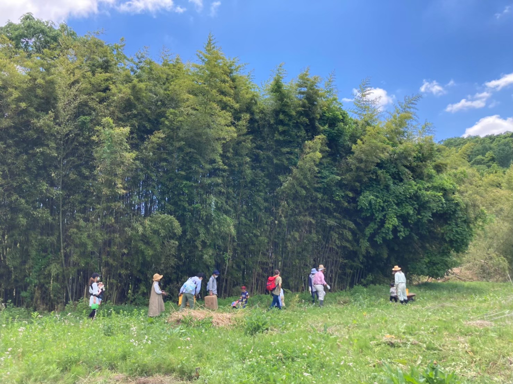
「時間」をつかって
支え合う
flag
じかんぎんこうとは
じかんぎんこうは、みんなが平等にもっている「時間」をつかってできることや困っていることをシェアしみんなで支え合っていくしくみです。
そこでの出会いが人とのつながりをつくり、暮らしををより豊かに楽しくしていきます。
- 利用をする前には登録が必要です。
- 保険の加入が必要です。（無料）
- 自分の情報を公開したり、公開している情報を見て、交流を深めることもできます。
- 週に１度、登録の日を設けます。その時にみんなでやりたいことを提案しながら楽しく集います。
- 子供たちのイラストが入った通帳を使って、やりとりを記録していきます。
具体的な利用の流れ
お手伝いできることがあれば事務局に連絡をもらい、できる人をさがします。自分のできるときに、できることをしていきます。
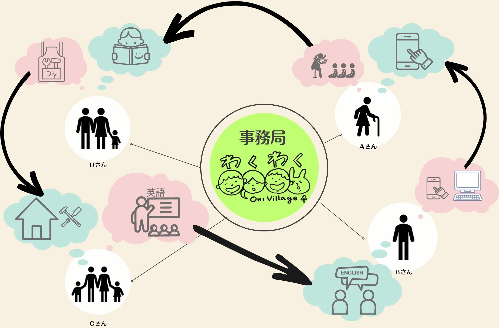
flag
Member
じかんぎんこうの登録メンバーです。
表は下にスクロールできます。スマホでは、横にもスクロールできます。
| おなまえ | できること | 対応できる時間 | やってほしいこと | 趣味 | やってみたいこと | しりたいこと | |
|---|---|---|---|---|---|---|---|
| ゆりぴー | 子育てサポート 話し相手 |
平日日中 土日祝日 要相談 |
子育てサポート ご飯を作ってほしい |
山登り ご飯を食べること スポーツ観戦 |
釣り パラグライダー 世界一周 |
犬を飼いたいので子犬が産まれたなどの情報 おいしいごはん情報 お金のこと |
|
| ゆりた | 子育てサポート 裁縫 |
平日10時00分から15時30分 | 英語を教えてほしい マッサージ |
裁縫、カラオケ | サップ | ||
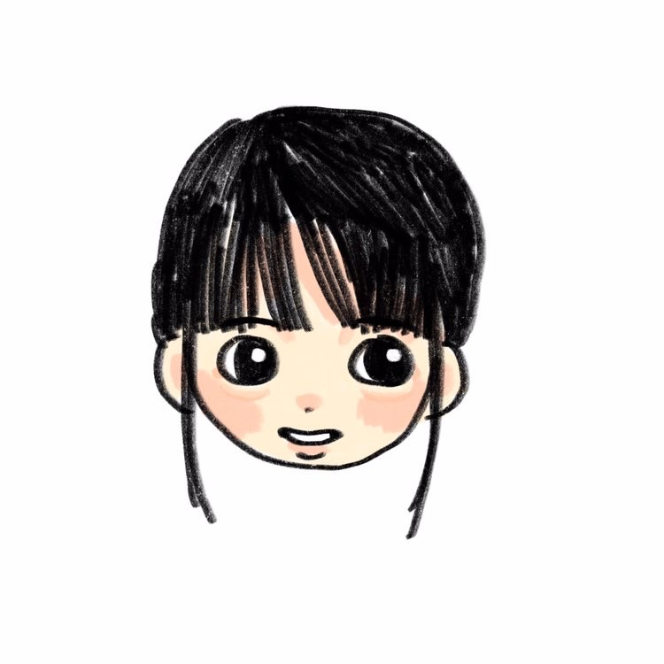 |
めぐみ | 子育てサポート、車の運転 動物の世話、話し相手 筆文字、トラックの運転（３トン） |
要相談 | 子育てサポート 子どもに色々（外国語など）を教えてほしい |
切手集め、献血、庭いじり、裁縫（母が） 温泉、動物 |
海外旅行 畑 |
麻績のこと 食育 |
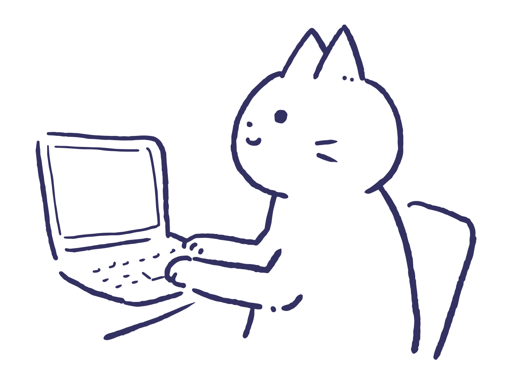 |
みやがわ | パソコン操作説明 経理相談 傘修理 |
平日21:00 - 23:00 | 子供達の遊び相手 英語を教えてほしい |
スキー PC関係 |
海外旅行 | |
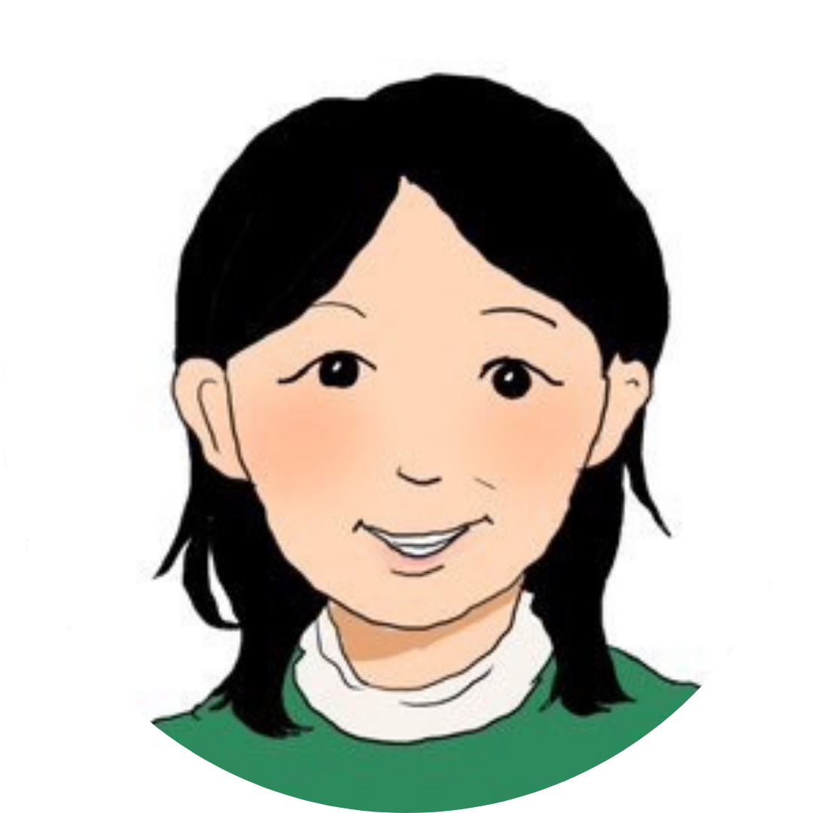 |
さーさん | 子育て支援全般 | 要相談 | お店のお留守番 | 山登り、大型バイク 庭いじり、陶器あつめ |
日本一周、放浪の旅 山巡り |
|
| ナオコッコ | 子育てサポート グリーフケア 話し相手 |
子育てサポート | 絵を描く | 洋服作り | |||
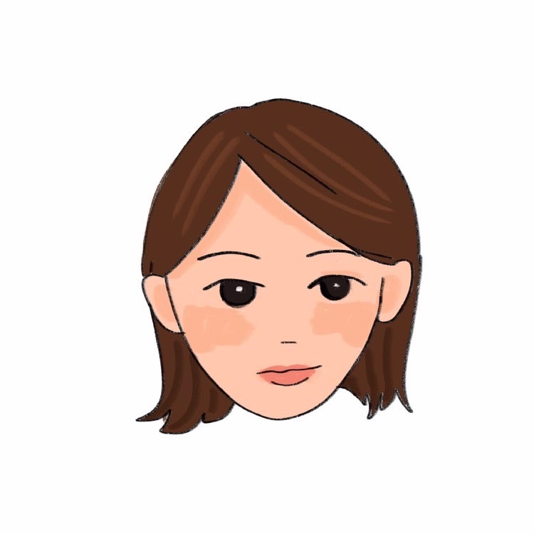 |
ままみ | パソコンで書類作成 イラスト 経理 |
土日、要相談 | ごはんを作ってほしい | 編み物 昼寝 |
刺繍 | 宇宙のこと |
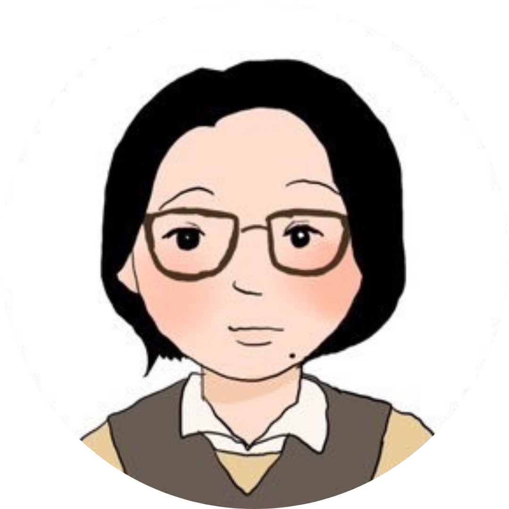 |
おーしまー | 買い物、子育て 家事、料理 手芸、話相手 |
要相談 | 子育てサポート 草刈り 外国語を教えてほしい 家の改修を手伝ってほしい |
手芸、絵を描くこと 読書、アニメ 漫画、さんぽ |
子育て情報 | |
| 巧実 | 子どもの勉強サポート（理数系） PC作業、腕時計修理 プログラミング 電器系困りごと相談 |
子育ての合間ならいつでも（育休中のため）、土日の子育ての合間 | 子育てサポート 自宅のリフォーム |
麻雀、電子工作 3Dプリンタ |
自宅のリフォーム（キッチン、風呂、土台） | ||
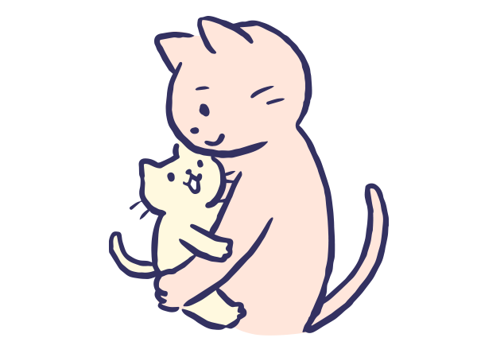 |
マリー | 英語、フランス語の読み聞かせ | りんごの摘花 | ||||
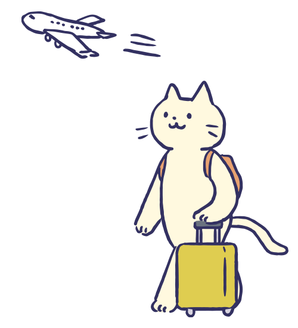 |
りさ | 子育てサポート、軽作業全般、話し相手等なんでも！ | 要相談 | 子育てサポート | 釣り、献血、音楽ライブ、お笑い | 世界遺産めぐり | |
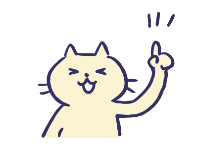 |
麻績のばあば | 子育てサポート、草取り、漬物 | 土日 | 子守り、リースなど自然物作り | 旅行、グルメ旅、留学（英語） | ||
| きゃなこ | 話し相手、料理（簡単な） | 土日１０時から１５時頃 要相談 | 子育てサポート（料理、子どもの見守り） | 山登り、アウトドア | 海外旅行、温泉巡り、サウナ、運動 | 簡単な料理レシピ、裁縫 | |
| ツカちゃん | 子育てサポート、話相手 | ||||||
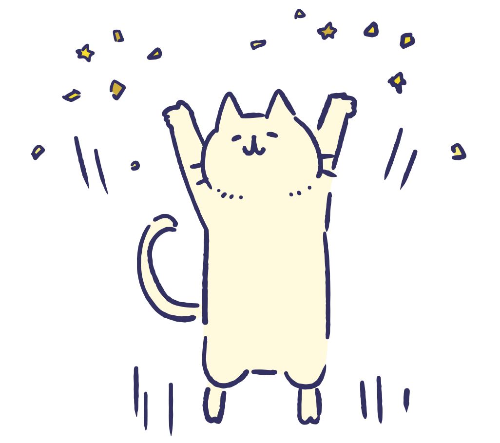 |
もなか | 話し相手、子どもと遊ぶ | 平日空いていれば | 小中学校の物品の手伝い、ぞうきんや、ペットボトルのふたを集める、缶の回収、学際を盛り上げる | ボーっとする、温泉に入る、食べること、ゲームのあつ森をやる、しゃべること | 麻績ポンの商品をふやす | 猫のこと、猫好きとつながりたい |
| ゆりりん | 話し相手 | 平日 | りんご摘果 葉摘み | 刺繍 | |||
| さかな | 子育てサポート・話し相手 | 平日１７：００－１８：００、土日祝１０：００－１２：００ | 子育てサポート(送迎) | 和太鼓・バイオリン | 子どもの遊び場情報 | ||
| みっちー | DIYサポート・軽トラ買い出し・書類作成・球技スポーツの練習相手 | 要相談 | 英会話・薪割 | DIY・バスケ・サッカー・スノボー | 海外旅行・サックス | ヤギの飼いかた・ニワトリの飼いかた・美味しいコーヒーの淹れ方 | |
| ふなちゃん | 買い物・家事・読み聞かせ | ||||||
| やまちゃん | 力仕事、料理、ランニング同伴、チラシやポスターの作成、球技スポーツの練習相手 | 全日9:00～17:00 | DIY手伝い、アドバイス、電気工事 | 料理、渓流釣り | 複数軒の空き家再生、活用（飲食業と宿泊業） | 麻績村のこと（特に空き家） | |
| HUMMER | 初心者へのフルート指導（30分程度）、草むしり | 平日9:00～13:30 | 子どもが帰宅後、夕食の準備をしている間、シッターをしてほしい。子どもに書道や英語を教えてほしい | 料理、フルート | |||
| YRM | できることなら何でも | ||||||
| おすぎ | 買い物代行、裁縫、着物の着付け | 平日、土曜日10時～16時 | 家のDIYのお手伝い、アドバイス（工具を貸してもらえると助かります） | ||||
| ゆま | 草木染、手作り系、ギター（小さい子向け） | 休日の空いている時 | ギター、ハンドメイド | ||||
| あいあい | パン作り、クッキー作り、うどん、たこ焼き作り体験 | 子どもの世話、病後児保育 | 料理、裁縫 | ||||
| かわうそ | 1時間程度の子守り、お話を聞くこと、雪かき、タイヤ交換、お庭のお手伝い、おやつ作り（超簡単な） | 平日日中 | 着付けを教えてほしい、英会話、託児、焼き肉、裁縫代行、お庭づくり、野菜作りの知恵、DIYのコース、お茶相手、お料理教えてほしい | お花、植物が好き、食事、お茶、音楽、映画 | パングライダー、気球、旅行、クルーズ、みんなで焼き肉、竹細工、キャンプ、登山 | 子育て情報、庭づくりについて、ごはんづくり、災害時からのサバイバル知識、昔ながらの生活の仕方、知恵（電気がなくてもできること）、グルメ情報（県内） | |
| うみがめ | 運転代行、買い物、おつかい、お弁当作り、庭作業手伝い | 平日日中 | 村の情報、歴史、寒暖、手話を教えてほしい | ドライブ、旅行、電車、お料理、お酒 | 田んぼづくり、異世代交流 | 子育て情報、庭づくりについて、ごはんづくり、災害時からのサバイバル知識、昔ながらの生活の仕方、知恵（電気がなくてもできること）、グルメ情報（県内） |
flag